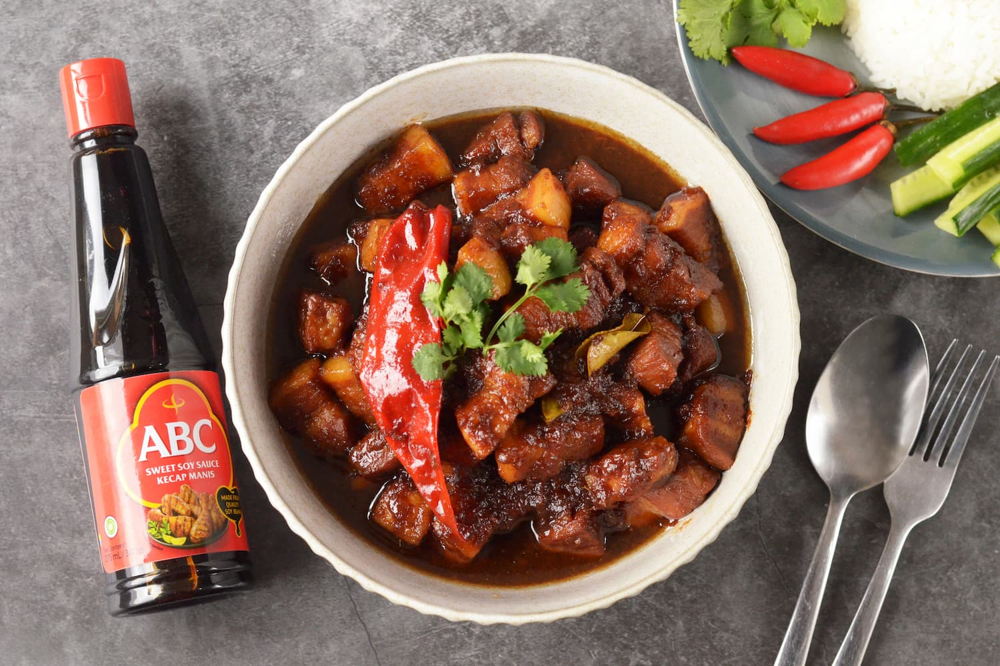

Babi Kecap (Indonesian Braised Pork)

A must try for every pork lovers in the universe!
"Eat more pork, feel better."
Ingredients
- 1 kg rindless pork belly (cut into 2-3cm cubes)
- 2 tbsp cooking oil
- 1 yellow onion (chopped finely)
- 2 tbsp minced ginger
- 1 tbsp minced garlic
- ½ tsp coriander powder
- ½ tsp galangal powder
- ¼ tsp white pepper powder
- 1 fresh red chilli, whole
- 130ml ABC Kecap Manis Sweet Soy Sauce
- 400-500ml water
- Salt to taste
- 1 kaffir lime leaf (optional)
Directions
- Heat a heavy pot or cast-iron pot with oil under medium heat. Sauté onion, ginger, garlic, coriander powder, galangal powder, white pepper, chilli and kaffir lime leaf (optional) until onion is translucent.
- Toss in pork belly cubes, stir well and cook till all sides are well seared and slightly brown.
- Add in ABC Kecap Manis sauce and stir well to coat. Add enough water to cover the pork and simmer covered on low heat for 1 – 1.5 hours until pork is soft.
- Continue to simmer uncovered for another 30 mins or until the sauce thickens up.
- Serve hot with rice.
Return to main page